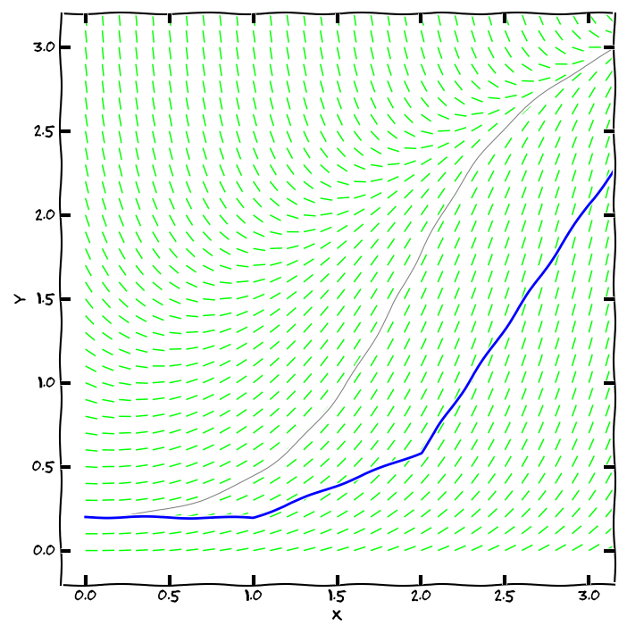
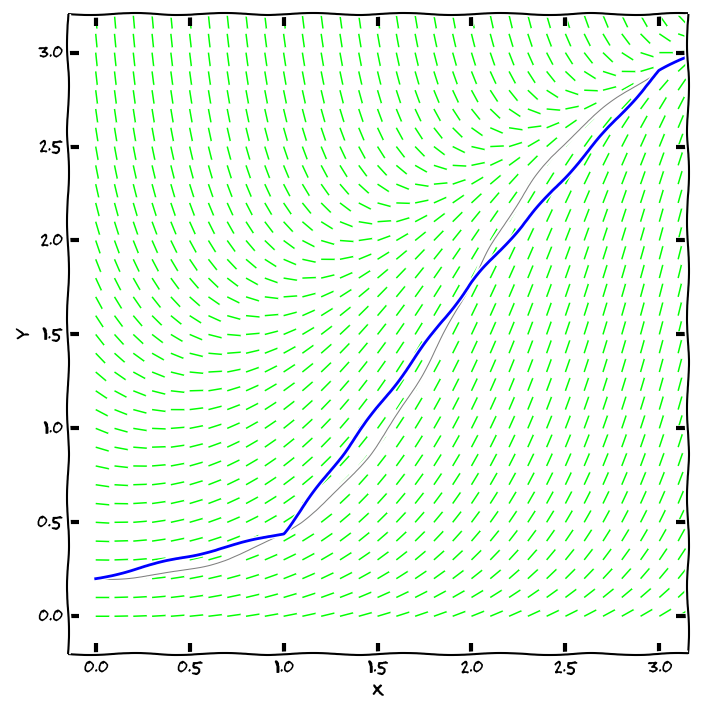
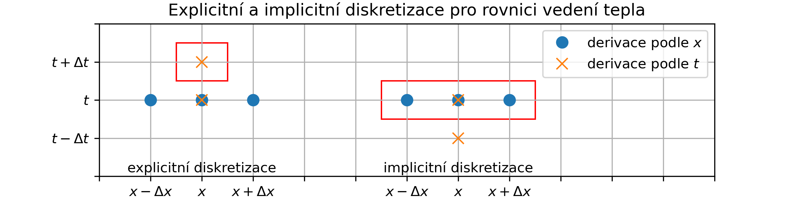
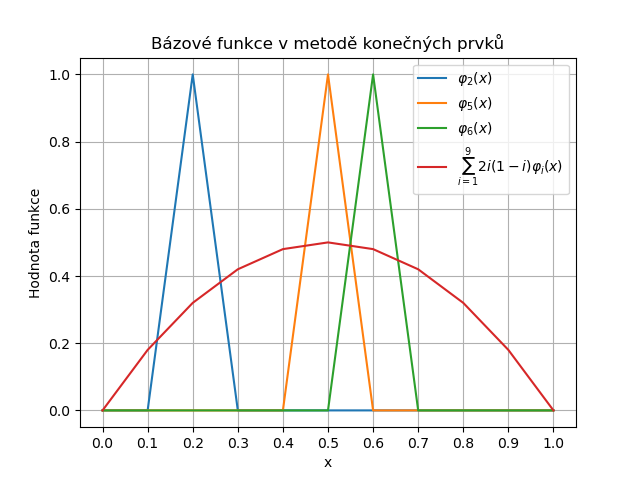

12. Metody řešení diferenciálních rovnic 1#
Anotace
Ukážeme si některé metody pro numerické řešení obyčejných i parciálních diferenciálních rovnic. Probereme metody jako Eulerova metoda, Runge-Kuttovy metody, metody konečných diferencí, metodu konečných prvků a další. Jako doplněk si ukážeme řešení parciálních diferenciálních rovnic Fourierovou metodou separace proměnných, která umožňuje odseparovat časovou a prostorovou složku řešení a tím lépe pochopit některé vlastnosti řešení, zejména u rovnic popisujících vlnění.
12.1. Metody pro obyčejné diferenciální rovnice#
12.1.1. Numerické řešení IVP#


Obr. 12.1 Eulerova metoda s velmi dlouhým krokem (modrou barvou) zaostává za přesným řešením (šedou barvou). Pro lepší výsledek můžeme zmenšit krok nebo vylepšit metodu.#

Obr. 12.2 Metoda Runge Kutta s velmi dlouhým krokem (modrou barvou, jde jasně vidět aproximace lomenou čarou). Přesné řešení je nakresleno šedou barvou.#
Numerické řešení diferenciálních rovnic je základním nástrojem pro ukázku průběhu simulací pro dané hodnoty parametrů a počátečních podmínek. Jedná se o velice užitečnou a široce používanou činnost při inženýrských simulacích. Neprofesionálům často musí stačit použít hotové postupy, procedury a nástroje. Například Python je jednou z nejvhodnějších voleb.
Vyjdeme-li z počáteční úlohy
Stačí tedy mít zvolen krok numerické metody (délku intervalu, na kterém aproximaci tečnou použijeme) a výstupem metody bude aproximace integrální křivky pomocí lomené čáry.
Vylepšení
Pro přesnější aproximaci je možné zjemnit krok \(\displaystyle h\) (buď všude, nebo jenom tam, kde „je to potřeba“).
Pro přesnější aproximaci je možné použít místo \(\displaystyle \varphi(x_n,y_n)\) lepší směrnici, která dokáže zohlednit, jestli se růst zrychluje nebo zpomaluje (metoda Runge Kutta druhého nebo čtvrtého řádu, …).
Modely obsahující diferenciální rovnice obsahují zpravidla sadu parametrů charakterizujících fyzikální vlastnosti studovaných objektů. Pro numerické řešení musíme těmto parametrům dát konkrétní hodnoty a přicházíme tak o cennou informaci, jak řešení závisí na těchto parametrech. Vhodnou úpravou rovnice dokážeme počet parametrů eliminovat. Jednoduchým a často dostatečným způsobem je volba jednotek, obecnější metodou je transformace diferenciální rovnice uvedená v úvodní kapitole věnované diferenciálním rovnicím.
Online řešiče ODE (numericky):
12.1.2. Malá odbočka - zaokrouhlovací chyby v numerických výpočtech#
Obr. 12.3 Součást protiraketového systému Patriot. Raketu Scud vystřelenou 25.2.1991 systém nesestřelil vinou zaokrouhlovací chyby. Zdroj: U.S. Army.#
Uvedli jsme, že počáteční úlohu umíme vyřešit numericky. Ukázali jsme si základní algoritmus (Eulerův) a řekli, že existují algoritmy pokročilejší. Na tomto místě upozorníme na záludnosti skryté v numerických výpočtech. Je iluzorní se domnívat, že zjemněním kroku při numerickém řešení diferenciální rovnice vždy dostaneme přesnější řešení. Toto platí jenom dokud se nedostaneme ke kritické hodnotě kroku, kdy další snižování vede k tomu, že zpřesnění díky kratšímu kroku se přebije akumulovanou chybou z velkého množství výpočtů nutně zatížených zaokrouhlováním a dalším zjemňováním přesnost ztrácíme.
Zajímavá léčka je v samé podstatě výpočtů na počítači a to v reprezentaci desetinných čísel ve dvojkové soustavě. Například číslo 0.1 je ve dvojkové soustavě periodické! Proto desetinásobným sečtením tohoto čísla ve dvojkové soustavě nedostaneme (překvapivě) jedničku! Je to podobné, jako bychom v námi běžně používané desítkové soustavě třikrát sečetli jednu třetinu v desetinném tvaru reprezentovaném konečným počtem desetinných míst, tj. například třikrát sečetli číslo \(\displaystyle 0.33333333\). Nedostaneme přesně jedničku.
Tento efekt měl i tragický důsledek. Software protiraketového systému Patriot počítal čas postupným přičítáním desetiny sekundy. Protože systém byl vytvořen a testován na mobilním zařízení, které se často restartovalo a běželo krátkou dobu, ničemu to nevadilo. Dlouhodobé nasazení systému Patriot ve válečné operaci na osvobození Kuvajtu však odhalilo závažný nedostatek. Při ostrém nasazení systém běžel dlouho a zaokrouhlovací chyba se kumulovala například 100 hodin. I když za tu dobu chyba dosáhla pouze zlomku sekundy, raketa letící vysokou rychlostí již byla jinde, než systém Patriot propočítal. Dne 25.2.1991 systém Patriot během operace Pouštní bouře na osvobození Kuvajtu od irácké okupace nesestřelil útočící raketu Scud a ta zabila 28 vojáků osvobozující armády a okolo 100 osob zranila.
S chybami plynoucími ze zaokrouhlování se setkáme i při výpočtech mimo modelování diferenciálních rovnic. Viz například Floating-point arithmetic may give inaccurate results in Excel.
12.2. Metoda konečných diferencí#
12.2.1. Diskretizace rovnice vedení tepla pomocí konečných diferencí#
Rovnice obsahující parciální derivace jsou přirozeným jazykem, kterým modelujeme fyzikální děje. To jsme viděli na rovnici vedení tepla výše a setkáme se s tím i dále. Bohužel tyto rovnice umíme ručně vyřešit jenom v poměrně speciálních případech a ani v těchto případech to není snadná práce. Proto v inženýrské praxi dáváme přednost numerickému řešení rovnice. To je založeno na numerické aproximaci derivací a převádí řešení rovnic s parciálními derivacemi na řešení lineárních rovnic. Možnosti si naznačíme na příkladu rovnice vedení tepla. Tato ukázka je důležitá pro pochopení, co nám z rovnic vlastně může vyplývat a jaké jsou zhruba požadavky na výpočetní prostředky.

Obr. 12.4 Konečné diference umožňují převést parciální diferenciální rovnici na soustavu lineárních rovnic. Červený rámeček označuje neznámé hodnoty v dalším časovém kroku. U explicitní metody je tato hodnota jediná a je snadné ji vypočítat. U implicitní metody jsou neznámé hodnoty tři, každá z nich figuruje ve třech rovnicích a je nutné řešit soustavu rovnic s tridiagonální maticí.#
Po převedení derivací z rovnice vedení tepla
Explicitní metodu je snadné implementovat programovým kódem. Pokud teploty v čase \(\displaystyle t\) uspořádáme do sloupcového vektoru \(\displaystyle \vec T(t)\), je dokonce možno předchozí vztah zapsat pro všechny body současně jedinou maticovou rovnicí
Ještě existuje metoda implicitní metoda řešení založená na zpětné diferenci v čase namísto dopředné, tj.
Rozdíl mezi implicitní a explicitní metodou je v tom, že u explicitní metody máme v každé rovnici jednu neznámou a tuto neznámou je snadné určit. Formálně metoda vede na soustavu rovnic, ale řešení této soustavy je triviální. Oproti tomu u implicitní metody máme v každém vztahu tři neznámé a řešení soustavy rovnic je komplikovanější. Zdá se tedy, že explicitní metoda je výhodnější. Bohužel v praxi explicitní metoda vyžaduje dostatečně jemný časový krok, což může vést k nutnosti použít velmi jemnou časovou diskretizaci a tato skutečnost navyšuje výpočetní náročnost jak z hlediska času, tak i z hlediska paměťových nároků. Implicitní metoda je sice komplikovanější na výpočet, ale dovoluje použít větší časové kroky a v praxi se ukazuje jako výhodnější. Často se pro zvýšení přesnosti používá i kombinace obou metod, kdy je v diferenčním schematu použita dopředná i zpětná diference pro derivaci podle času a obě jsou vhodně zkombinovány (Crank-Nicolsonova metoda).
12.3. Metoda konečných prvků#
Metoda konečných prvků je jedna z nejběžnějších numerických metod pro řešení diferenciálních rovnic v inženýrských aplikacích. Ukážeme si základní myšlenky této metody na jednoduchém příkladu rovnice
12.3.1. Slabá formulace rovnice#
Nejprve převedeme rovnici na tzv. slabou formulaci. To je formulace, kde nevystupuje druhá derivace funkce \(\displaystyle u\), ale jenom derivace první. To umožní pracovat například s úlohami vedení tepla, kde se materiálové vlastnosti mění skokem. Kromě toho slabá formulace převádí úlohu na úlohu integrální, což je výhodné pro numerické metody. Na tuto výhodu se zaměříme a proto nebudeme rozebírat aspekty spojené s hladkostí funkcí. Budeme předpokládat, že funkce, se kterými pracujeme, jsou dostatečně hladké.
Použijeme základní poznatky z integrálního počtu a derivaci součinu funkcí \(\displaystyle u'\) a \(\displaystyle v\)
Nyní přistoupíme k převodu rovnice (E) na obecnější formulaci. Rovnici napíšeme pro jednoduchost s derivacemi vyjádřenými čárkami a s vynechanou závislostí na \(\displaystyle x\)
12.3.2. Galerkinova metoda#
Vyjdeme ze slabé variační formulace (W) a budeme hledat přibližné řešení ve tvaru
Derivace funkce \(\displaystyle u(x)\) je
Galerkinova metoda spočívá v tom, že za funkci \(\displaystyle v(x)\) volíme postupně jednotlivé bázové funkce, tedy \(\displaystyle v(x)=\varphi_i(x)\) pro \(\displaystyle i=1,2,\ldots,n\). Tím dostaneme soustavu rovnic

Obr. 12.5 Bázové funkce pro metodu konečných prvků na intervalu [0,1] s dělením na deset dílčích intervalů. V obrázku jsou vybrány tři bázové funkce a lineární kombinace bázových funkcí aproximující parabolu \(\displaystyle y=2x(1-x)\).#
Je účelné volit bázové funkce tak, aby na jednu stranu generovaly dostatečně širokou škálu funkcí, ale také aby byla matice \(\displaystyle A\) vhodná pro numerické řešení — například, aby byla řídká. Vhodnou volbou jsou trojúhelníkové funkce dle připojeného obrázku. Pomocí lineární kombinace těchto funkcí je možné vyjádřit libovolnou po částech lomenou funkci splňující nulové okrajové podmínky. Při takto zvolených funkcích je \(\displaystyle a_{ij}\) nulové, pokud se \(\displaystyle i\) a \(\displaystyle j\) liší více než o jedničku a matice \(\displaystyle A\) má nenulové prvky jenom na hlavní diagonále a na dvou přilehlých diagonálách (je tridiagonální). Výpočet integrálů pro \(\displaystyle a_{ij}\) vede k následující matici.
12.3.3. Metoda konečných prvků (FEM)#

Obr. 12.6 Ukázka programu pro modelování pomocí metody konečných prvků (FEM). V tomto případě je modelován tříbodově podepřený nosník zatížený silou uprostřed. Program umožňuje měnit parametry nosníku a zatížení a okamžitě vidět výsledky a identifikovat kritická místa konstrukce.#

Obr. 12.7 Smykové namáhání není symetrické, ale antisymetrické.#
Výše uvedený postup tvoří jádro metody konečných prvků (angl. finite element method, FEM). Problém je nejprve naformulován obecněji než v původní diferenciální rovnici (slabá variační formulace) a poté je hledáno přibližné řešení v podprostoru generovaném zvolenými bázovými funkcemi. Dosazením tohoto tvaru řešení do slabé formulace a volbou testovacích funkcí je získána soustava lineárních rovnic pro neznámé koeficienty v rozvoji řešení podle bázových funkcí. Tuto soustavu je poté možné vyřešit běžnými numerickými metodami pro řešení soustav lineárních rovnic.
Uvedený postup je možné zobecnit na složitější rovnice a úlohy. Na rozdíl od analytických metod si metoda konečných poradí i s komplikovanějšími geometrickými tvary a nespojitými materiálovými vlastnostmi, kdy na sebe navazují dva odlišné materiály. Je možné metodu použít i pro nelineární rovnice, i když v tomto případě je výpočet numericky náročnější.
Výhodou metody konečných prvků oproti metodě konečných diferencí je větší volnost diskretizaci. Metoda konečných diferencí vyžaduje pravidelnou síť bodů, kdežto metoda konečných prvků umožňuje využít nepravidelnou síť a přizpůsobit hustotu bodů místním potřebám. To je výhodné například při zjemnění diskretizace v místech, kde se očekávají velké změny řešení.
Matematicky se například při řešení úlohy statické rovnováhy používá popis stavu napjatosti a deformace pomocí tenzorů napětí (\(\displaystyle \sigma\)) a deformace (\(\displaystyle \varepsilon\)).

Obr. 12.8 Tenzor napětí \(\displaystyle \sigma\) popisuje vnitřní síly v tělese. Komponenty jsou síly působící na jednotku plochy a rozlišujeme normálové a smykové síly.#
Tenzor napětí udává normálovou nebo tečnou sílu působící v tělese na jednotku plochy. Zpravidla tyto síly modelujeme na reprezentativním elementu tělesa ve tvaru krychle.
První uvedená notace se používá pro souřadné osy \(\displaystyle x\), \(\displaystyle y\) a \(\displaystyle z\), zatímco druhá notace používá obecnější označení souřadných os \(\displaystyle x_1\), \(\displaystyle x_2\) a \(\displaystyle x_3\) a je vhodná pro elegantní zápis některých identit. (Viz například definice tenzoru deformace níže.)
Tenzor deformace popisuje, jak těleso mění tvar. I zde sledujeme normálové a smykové komponenty. Ty jsou definovány pomocí vektoru posunutí \(\displaystyle \vec u(x,y,z)\) vztahem
Vztah mezi napětím a deformací (Hookův zákon) je pro lineární materiály dán vztahem
Hookův zákon potom zpravidla píšeme ve tvaru obsahujícím dobře měřitelné materiálové parametry, jako jsou Youngův modul pružnosti \(\displaystyle E\), smykový modul \(\displaystyle G\) a Poissonův podíl \(\displaystyle \nu\).
Poznamenejme, diagonálnost pravého dolního rohu plyne z poznatku, že pro většinu materiálů se smykové namáhání projevuje pouze smykovou deformací v rovině, ve které působí.
Při vhodné volbě souřadné soustavy se smykové namáhání neprojevuje normálovou deformací a normálové namáhání se neprojevuje smykovou deformací. Proto zpravidla předpokládáme, že pravý horní a levý dolní blok matice v Hookově zákonu je nulový.
V komponentách má Hookův zákon tvar
Protože je matice z Hookova zákona symetrická, musí být splněny podmínky
Pro statickou rovnováhu platí, že vnitřní síly musí být v rovnováze s vnějšími silami, což se matematicky vyjadřuje pomocí rovnic kontinuity pro jednotlivé komponenty. Tyto rovnice mají tvar